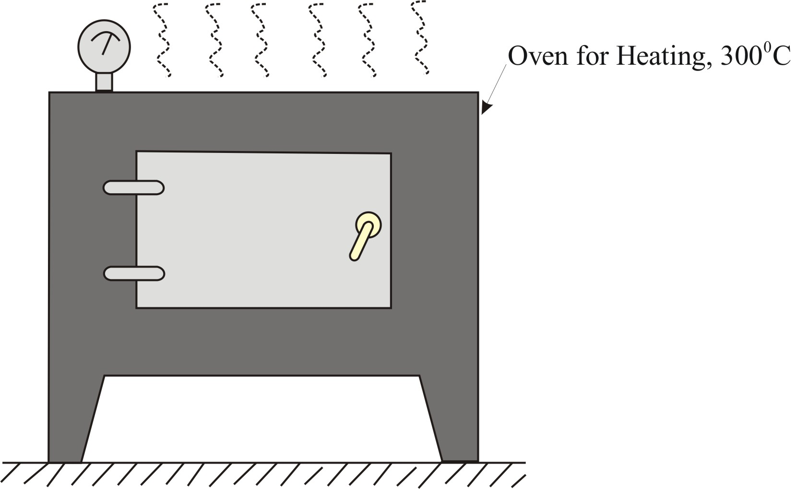
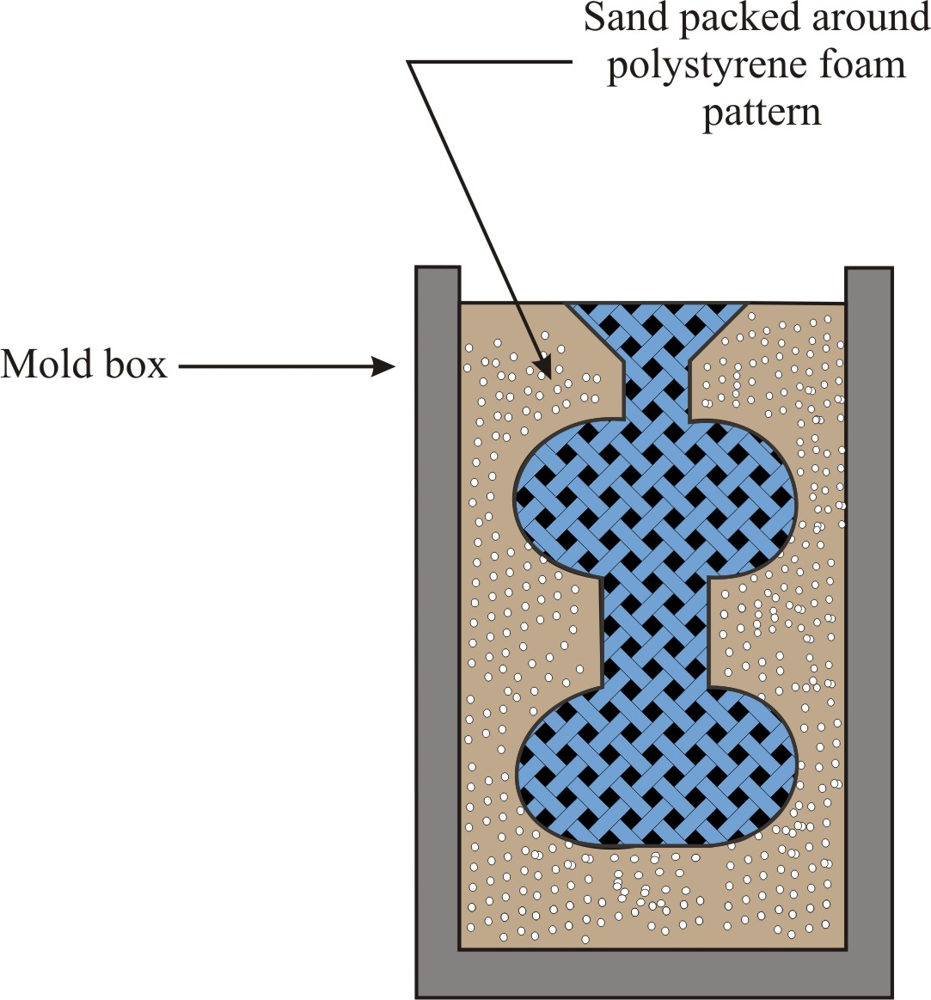
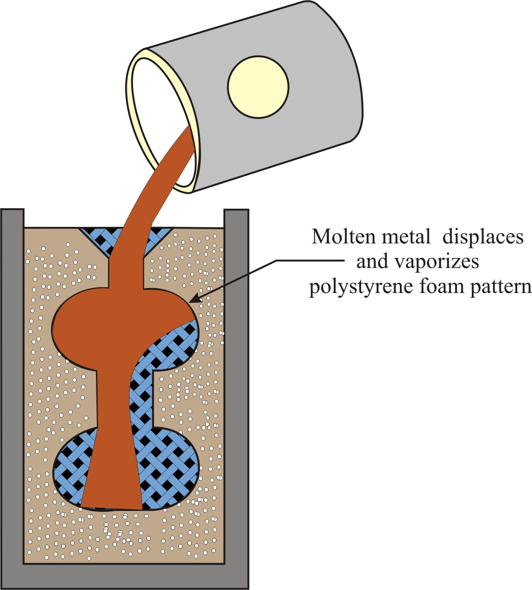
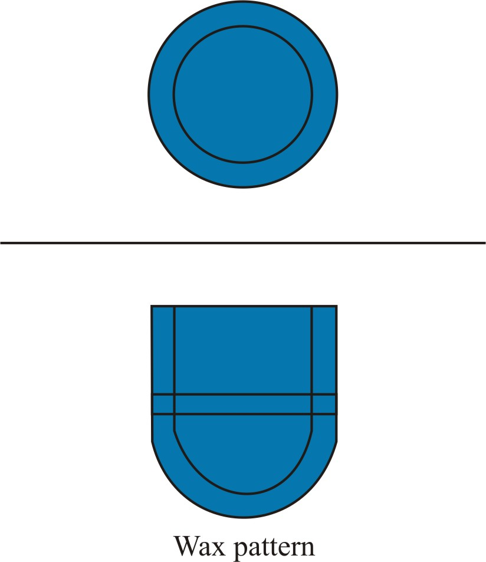

Sand casting processes, which we have studied so far, find wide applications and give satisfactory results at lowest cost in many cases. The sand moulds are single use moulds as they are destroyed after the casting has been removed from the moulding box. It becomes, therefore, obvious that the use of a permanent mould would do a considerable saving in time and labour cost of mould making.
In addition, sand casting process does not always produce good and consistent results and it cannot be used in situations when more accurate and precise castings are to be made. In these situations, special casting processes are used for making high precision castings.
1. To understand the need of special casting process.
2. To gain knowledge about the various special casting process.
3. To able classify casting processes on the basis of mould (permanent / expendable) and pattern.
4. Able to select various special casting processes on the basis of different applications.
Special casting processes have the following advantages over the sand casting processes:
1. Greater dimensional accuracy,
2. Higher production rates,
3. Lower labour costs,
4. Better surface finishing,
5. Minimum need for further machining of castings,
6. Ability to produce extremely thin sections etc.
However, special casting techniques are not preferred always owing to their high initial investment requirement. We discuss some of the widely used special casting processes.
Plaster mould casting process is also known as ceramic mould casting process. This process is used for casting objects of aluminium, lead, tin, magnesium, bronze alloys. In this process, moulds are prepared by pouring plaster (or gypsum, CaSO4-2H2O) around the pattern. Patterns for plaster mould casting process can be made from wood, metal, plastic etc (preferably brass match plate pattern). Wood patterns not generally used due to extended contact with water. Plaster mould casting process is illustrated in Figure 1.

Figure 1: Plaster mould casting process
The process consists of preparing plaster slurry by mixing gypsum with silica flour, silica sand and water (see Figure 1(a)). When mixed with water, the gypsum re-crystallizes as it dehydrates, which causes the plaster to set by the interlocking of crystals. The slurry thus prepared is poured over the metal pattern kept in cope, as shown in Figure 1(b). Plaster slurry readily flows around pattern, capturing its fine details and good surface finish. The mould is slightly vibrated to ensure slurry filling all cavities. The initial setting requires few minutes (15 minutes) after the pouring of slurry and then the pattern is removed from the hardened slurry. The drag portion is also made in the same way. Cope and drag are dried in ovens at 120-260oC to remove moisture. While the mould halves are still hot from the drying oven, they are quickly assembled / clamped, Figure 1(c). Assembled mould is poured with molten metal immediately to minimize the absorption of moisture from the atmosphere. Castings, after solidification and cooling, are removed from the moulds with high-pressure water jet. Using this process dimensional accuracy of the order of 0.008-0.01 mm can be obtained. Typical products made using plaster moulds include aircraft parts, gears, valves, ornaments etc.
Note: Because plaster moulds have very low permeability, gases evolved during solidification of metal cannot escape easily. Therefore, the molten metal is poured either in vacuum or under pressure. Mould permeability is sometimes improved using foamed plaster containing trapped air bubbles. Plaster moulds have low thermal conductivity, the castings cool slowly and a more uniform grains structure of castings is obtained.
Advantages of plaster mould casting process:
1. Good accuracy and surface finish.
2. Capability to make thin cross sections.
Disadvantages of plaster mould casting process:
1. Mould must be baked to remove moisture, which can cause problems in casting.
2. Mould strength is lost if over-baked.
3. Plaster moulds cannot stand high temperatures, so limited to lower melting point alloys.
The ceramic mold casting is a variation of plaster mold process, except that the mold material is a refractory slurry that can withstand higher temperatures than plaster. The slurry, comprising fine-grained zircon (Zr-SiO4), aluminium oxide, fused silica and some binding agent, is poured over the pattern (metallic or wooden) kept in a flask. After sometime, the set ceramic slurry facing is removed from the pattern and dried and baked. The mold (or ceramic facing) thus prepared is baked by fire clay to give strength to the mold (shaw process). Ceramic molds are used for casting cast steels, cast irons, and other high temperature alloys. Castings have very good finish and dimensional accuracy. Products of castings include dies for metal working, molds for plastic molding, cutters or impellers.
Shell moulding process is also known as Croning process or C-process after the name of its inventor Johannes Croning. Shell moulding replaces conventional sand moulds by shell moulds made up of relatively thin (only 0.3 mm to 0.6 mm thick), rigid shells of approximately uniform wall thickness. Shell moulds are made up of mixture of dry silica sand and 3 to 10% phonemic (phenol-formaldehyde, thermosetting resin) resins that are formed into thin half mould shells, which are held with clamps or adhesive for pouring as shown in Figure 2(f).
The different steps involved in shell moulding are shown in Figure 2 a-f.
 |  |
| a. Step - 1: a match plate or cope and drag metal pattern is heated and placed over a dump box containing sand mixed with thermosetting resin. | b. Step - 2: dump box is inverted so that sand and resin fall onto the hot pattern, causing a layer of the mixture to partially cure on the surface to form a hard shell. |
 |  |
| c. Step - 3: dump box is repositioned so that loose uncured particles drop away. | d. Step - 4: sand shell is heated (175 to 370oC) in oven for several minutes to complete curing. |
 |  |
| e. Step - 5: shell mould is stripped from the pattern. | f. Step - 6: two halves of the shell mould are assembled, supported by sand or metal shot in a flask, and molten metal pouring is accomplished and further the finished casting with sprue removed is obtained. |
The process consists of heating a metal pattern to 175 to 370oC and then metal pattern is turned face down and clamped over the open end of the dump box (Figure 2(a)). The dump box is filled with sand-resin mixture. Then the dump box is inverted, as in Figure 2(b), so that dry sand-resin mixture falls on the metal pattern. The sand resin-mixture when comes in contact with the heated pattern, it softens and fuses to form a soft and uniform shell on the surface of the pattern. Heat first causes resin to become sticky; then additional heat hardens it. This process is finished within 30 seconds. Now, the dump box is turned over (re-positioned) as in Figure 2 (c) and the excess sand resin mixture falls back leaving a shell adhering closely to the pattern. Pattern and shell are then heated in an oven at 300oC for one minute (Figure 2(d)). This curing makes the shell rigid when it can be stripped off by means of ejector pins mounted on the pattern. Further the shell is removed from the pattern by spraying with a silicon release agent to help easy removal through ejector pins as shown in Figure 2 (e). A complete mould is made in two or more pieces made in similar manner that are assembled together as in Figure 2(f). Now the molten metal is poured into the cavity. Typical products manufactured by this proves are gears, bearing caps, bushings, cylinder heads, connecting rods, gear housings and other mechanical parts.
Note: It may be noted that the fine sand used in shell moulds has much lower permeability than the sand used in green-sand moulding. Also, the decomposition of shell-sand binder generates high volume of gas. Unless proper care is taken to vent out the entrapped gases and air, serious problems may arise in casting ferrous metals in shell moulds.
Advantages of shell moulding process:
1. Smoother cavity surface permits easier flow of molten metal and better surface finish.
2. Thin sections, sharp corners, small projections, which are not possible in green sand moulds, can be accommodated.
3. Good dimensional accuracy - machining often not required
4. Mould collapsibility minimizes cracks in casting
5. Can be mechanized for mass production
6. Floor space and sand quantity is reduced
Disadvantages of shell moulding process:
1. High initial investment and more expensive metal pattern
2. Difficult to justify for small quantities
3. Limited to small sized castings only
4. Recycling of sand is expensive
Also know as disposable pattern process, lost foam process, lost pattern process, evaporative foam process, and full mold process (as the mould does not have to be opened into cope and drag sections). The process uses a polystyrene pattern, which vaporizes upon contact with molten metal to form a cavity for the casting. The raw Expendable Polystyrene (EPS) beads are placed in a pre-heated aluminium die. The beads expand and take the shape of the die cavity. Beads are heated further to fuse and bond together to form the pattern.
The pattern is later placed in a flask which is filled with sand and compacted around the pattern, Figure (a-c). With pattern in position in sand, molten metal is poured onto the pattern which immediately vaporizes the pattern, resulting into a mold cavity which gets filled by metal. Fine castings of ferrous and non-ferrous metals with complex shapes and good surface details are produced by this process. The process finds use in mass production of castings for automotive industry for casting aluminum engine blocks, manifolds, cylinder heads, etc.
Note: Molten metal is poured rather rapidly into the sprue, the polystyrene vaporizes and the metal fills the remaining cavity. The mold is poured fast enough to prevent combustion of polystyrene, with the resulting carbonaceous residue. The gases due to vaporization of the material are driven out through the permeable sand and vent holes.
 (a) pattern of polystyrene is coated with refractory compound | |
|  |  |
| (b) polystyrene pattern is placed in mold box, and sand is compacted around the pattern | (c) molten metal is poured into the portion of the pattern that forms the pouring cup and sprue. As the metal enters the mold, the polystyrene foam is vaporized ahead of the advancing liquid, thus the resulting mold cavity is filled. |
 | |
"Investment" comes from a less familiar definition of "invest" - "to cover completely," which refers to coating of refractory material around wax pattern. A pattern made of wax is coated with a refractory material to make mold, after which wax is melted away prior to pouring molten metal. It is a precision casting process - capable of producing castings of high accuracy and intricate detail.
Steps involved in making a mold in Investment or Lost Wax casting process (Refer Figure (a-f)):
(a) Making of an expendable wax pattern by injecting wax into a steel two part die or mold. Cast solidified wax pattern is removed by opening the die. The expendable wax pattern is rinsed in alcohol to remove grease and dirt.
(b) Connecting together a number of cast wax patterns with previously cast wax gates and sprue (for metal flow in the molds) and thus preparing a tree with the aim of mass producing a stack of investment molds, followed by precoating of wax pattern tree with fine refractory material,
(c) Preparing an investment mold (or molds) by investing (or dipping completely) the precoated wax pattern assembly into an investment material, which is a coarser and viscous refractory material fine slurry with some binder. Then, the pattern is taken out of the slurry and rotated and vibrated for compacting in order to produce a uniform coating, to fill inside corners and to drain out the excess slurry.
(d) The coating thus produced on the expendable wax pattern after drying is called a precoat.
(e) After the investment (precoat) has set around the wax tree, the investment mold thus formed is placed in inverted form in an oven maintained between 90 and 175oC to dry the investment and to melt out the wax pattern (or tree). Mold may be further heated between 650 and 1050oC to further dry the mold and to take out the wax completely from the investment mold and to bring the mold to the temperature at which it will receive the molten metal. Thus, most of the wax or plastic melts and flows out of the mould, leaving a cavity with the shape of the intended casting.
(f) The hot mold is now ready to be poured immediately. The molten metal is poured in heated molds to produce an investment casting. The heated mould saves the liquid metal from acquiring the moisture and avoids high thermal gradient between the liquid metal and the mould. Finally, the adhered investment material is removed from the casting surface by sand-blasting or a tumbling operation.
Note:
1. A rather accurately dimensioned metal pattern is used. The dimensions of the pattern are calculated to compensate for the several size adjustments which take place in the process - in the die, in the wax, in the investment material, and, finally, in the casting material.
2. The investment slurry is made of the following materials:
(i) For non-ferrous castings, plaster of Paris and other gypsum products
(ii) For steel castings, silica flour with binder such as ethyl silicate, sodium silicate and phosphoric acid
(iii) Fine-grained silica sand with binder.
(iv) The slurry sets around the pattern assembly.
Advantages of Investment Casting Process:
1. Parts of great complexity and intricacy can be cast. Very thin sections of the order of 0.75 mm can be casted.
2. Close dimensional control (of the order of ±0.08 mm) and good surface finish. Thus the process is capable of reproducing surface details and dimensions with precision. Especially for high melting point alloys and difficult to machine metals.
3. The mould is made in a single piece, and consequently there is no parting line to leave out fins. This also adds to the dimensional accuracy of the casting.
4. Additional machining is not normally required this is a net shape process.
5. Both ferrous and nonferrous alloys are cast by this process.
6. Wax can usually be recovered for reuse.
7. No complication arises when withdrawing a pattern from the mould.
Disadvantages of Investment Casting Process:
1. Many processing steps are required
2. Relatively expensive process
3. The determination of the pattern dimensions is a tedious task and requires considerable experimentation. This makes the pattern in an investment casting very costly.
Applications of Investment Casting Process: Investment cast products include cast superalloys components for gas turbine and jet engine parts made of high temperature and high strength alloys that are made of hard-to-machine materials.
|  |  |
| (a) wax patterns are produced | (b) several patterns are attached to a sprue to form a pattern tree |
 |  |
| (c) the pattern tree is coated with a thin layer of refractory material | (d) the full mold is formed by covering the coated tree with sufficient refractory material to make it rigid |
 |  |
| (e) the mold is held in an inverted position and heated to melt the wax and permit it to drip out of the cavity | (f) the mold is preheated to a high temperature, the molten metal is poured, and it solidifies. Further the mold is broken away from the finished casting and the castings are separated from the sprue |